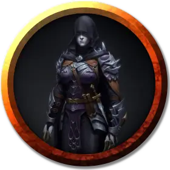

Вилн Тирин
Viln Tirin
Средний Гуманоид (Эльф), хаотично-злой, именной НИП

Класс Доспеха 15 (проклепанная кожа)
Хиты 65 (10к8 + 20)
Скорость 30 футов
| мод | спас | ||
|---|---|---|---|
| СИЛ | 15 | +2 | +4 |
| ЛОВ | 16 | +3 | +5 |
| ТЕЛ | 14 | +2 | +2 |
| мод | спас | ||
|---|---|---|---|
| ИНТ | 14 | +2 | +2 |
| МДР | 11 | +0 | +2 |
| ХАР | 14 | +2 | +2 |
Чувства пассивное Восприятие 10
Языки Все, Подземный, Эльфийский
Опасность 5 (1800 опыта)
Бонус мастерства +3
Особенности
Особое снаряжение. Вилн владеет скимитаром скорости [scimitar of speed] и может бонусным действием совершать им одну атаку в ход. У Вилн так же имеются четыре кинжала, покрытые ядом лилового червя. Яд на клинке кинжала может подействовать только при первом попадании вне зависимости от того, возымеет он эффект на цель или нет.
Наследие фей. Вилн совершает с преимуществом спасброски от очарования, и магия не может его усыпить.
Врождённое колдовство. Базовой характеристикой Вилн является Харизма (Сл спасброска от заклинания 12). Он может накладывать следующие заклинания, не нуждаясь в материальных компонентах:
• Неограниченно:пляшущие огоньки [dancing lights];
• 1/день каждое: огонь фей [faerie fire], тьма [darkness].
Чувствительность к солнечному свету. Находясь на солнечном свету, Вилн совершает с помехой броски атаки, а также проверки Мудрости (Восприятие), полагающиеся на зрение.
Действия
Мультиатака. Вилн совершает три рукопашные атаки: две скимитаром, и одну кинжалом. Вместо этого Вилн может совершить две дальнобойные атаки кинжалами.
Скимитар. . Рукопашная атака оружием: +7 к попаданию, досягаемость 5 футов, одна цель. Попадание: 8 (1к6 + 5) рубящего урона.
Кинжал (4 штуки). . Рукопашная или дальнобойная атака оружием: +7 к попаданию, досягаемость 5 футов или дистанция 20/60 футов, одна цель. Попадание: Колющий урон 5 (1к4 + 3) и цель должна совершить спасбросок Телосложения Сл 19, получая при провале урон ядом 42 (12к6), или половину этого урона при успехе.
Реакции
Парирование. Вилн добавляет 2 к КД против одной рукопашной атаки, которая должна попасть по нему. Для этого Вилн должна видеть атакующего, и должна использовать рукопашное оружие.
Описание
Лидер Брандашмыгов это своенравная и нигилистическая женщина дроу по имени Вилн Тирин.